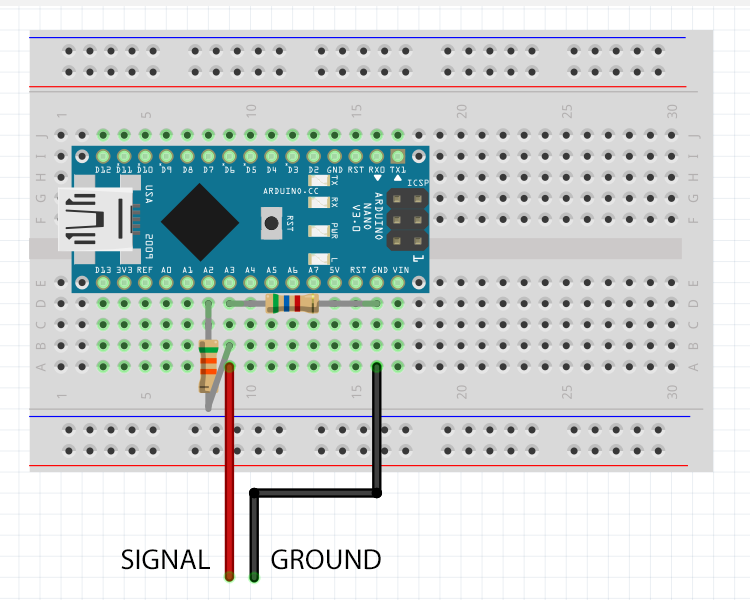

<!DOCTYPE >
<lang="en">
<head>

	<meta charset="utf-8">
	<meta http-equiv="X-UA-Compatible" content="IE=Edge">
	<meta name="viewport" content="width=device-width, initial-scale=1">
	<meta name="keywords" content="">
	<meta name="description" content="">

	<title>Alpha | Guide</title>

	<link rel="icon" href="images/favicon.ico">

	<link rel="stylesheet" href="css/newstyle.css">
	<link rel="stylesheet" href="css/bootstrap.min.css">
	<link rel="stylesheet" href="css/animate.min.css">
	<link rel="stylesheet" href="css/font-awesome.min.css">
  	<link rel="stylesheet" href="css/component.css">
	
    <link rel="stylesheet" href="css/owl.theme.css">
	<link rel="stylesheet" href="css/owl.carousel.css">
	<link rel="stylesheet" href="css/vegas.min.css">
	<link rel="stylesheet" href="css/style.css">

	<!-- Google web font  -->
	<link href='https://fonts.googleapis.com/css?family=Source+Sans+Pro:400,700,300' rel='stylesheet' type='text/css'>
	
</head>
<body id="top" data-spy="scroll" data-offset="50" data-target=".navbar-collapse">


<!-- Preloader section -->

<div class="preloader">
     <div class="sk-spinner sk-spinner-pulse"></div>
</div>


<!-- Navigation section  -->
  <div class="navbar navbar-default navbar-fixed-top" role="navigation">
    <div class="container">

      <div class="navbar-header">
        <button class="navbar-toggle" data-toggle="collapse" data-target=".navbar-collapse">
          <span class="icon icon-bar"></span>
          <span class="icon icon-bar"></span>
          <span class="icon icon-bar"></span>
        </button>
        <a href="https://www.alphahub.site" class="navbar-brand smoothScroll">Alpha</a>
      </div>
        <div class="collapse navbar-collapse">
          <ul class="nav navbar-nav navbar-right">
            <li><a href="https://www.alphahub.site" class="smoothScroll"><span>Home</span></a></li>
            <li><a href="join" class="smoothScroll"><span>Join</span></a></li>
            <li><a href="downloads" class="smoothScroll"><span>Downloads</span></a></li>
            <li><a href="#top" class="smoothScroll"><span>Guide</span></a></li>
			<li><a href="https://discord.gg/znkvcMV" class="smoothScroll"><span>Discord</span></a></li>
          </ul>
       </div>

    </div>
  </div>


<section id="contact" style="background-color: #232e38;">
  <div class="container">
    <div class="row">
      <div class="col-md-offset-2 col-md-8 col-sm-12 wow fadeInUp" data-wow-delay="0.3s">
			<h1><span style="opacity: 0;">.</span>&ltguide&gt</h1>
      </div>
    </div>
	<br />
		
	<hr style="opacity: 20%;" />
	
	<div class="row" style="text-align: center;">
		<h3 style="font-size: 170%"><span style="opacity: 0;">.</span>S O F T W A R E</h3>
		<br />
		
		<h3 style="font-size: 150%">SCAN</h3>
		<p>
		Use the SCAN function if you want to retrieve the DigiROM from your VPet.
		Once SCAN is pressed, the Arduino's LED should blink. Now, the Arduino is ready to retrieve the DigiROM from your VPet. Connect your VPet to your DCom or AlphaCom, and press the B button (middle button). Once the communication is complete, your DigiROM should appear in the Rom Field, and your VPet should display "ERROR" or "RETRY". While 0NL1NE uses Dummy Codes, Alpha Terminal has developed an alternative - Inert Codes. These DigiROMs work by retrieving the full DigiROM from your device without forcing it to battle, instead making it error out of the communication. This ensures your battle statistics won't be disrupted by scanning your VPet.
		</p>
		<br />
		
		<h3 style="font-size: 150%">SEND</h3>
		<p>
		To send a DigiROM from Alpha Terminal to your VPet, use the SEND function. When the SEND button is pressed, the data that is currently in the Rom Field will be sent to the Arduino. Be careful to make sure you have the correct DigiROM in the Rom Field before pressing SEND. Battle type communications (I.e. not jogress or copymon) will also return the DigiROM from the battle. Once the DigiROM has been sent to your VPet, the Rom Field will now have a new DigiROM - this is the DigiROM from the battle that just took place.
		</p>
		<br />
		
		<h3 style="font-size: 150%">Why does my DigiROM look weird? - Encryption</h3>
		<p>
		DigiROMs are Hexadecimal representations of the data that is directly transmitted between devices during a VPet communication. Though there is variation between device types, these codes typically contain information on the Digimon's name, power, the contents of the battle, and sometimes the victor. Conventional DigiROMs display this data in an entirely unprotected format where anyone has the ability to manipulate the data. Whether the individual understands the changes they may make to a DigiROM or not, they can be edited and abused very easily, making cheating a real threat. Alpha Terminal uses an encryption system that masks the data in a way that prevents cheating while retaining all of the data in the DigiROM. By "scrambling" the code into random characters, we can still copy, paste, and share our codes, only now there is no threat of abusing the DigiROM system. It is encouraged that you try to only give and accept encrypted DigiROM codes to ensure the community is free of cheating. Using conventional DigiROM codes in Alpha Terminal will yield an error, as it is not trusted by the program. The exception to this rule is Jogress, as there is virtually no damage that can be done in manipulating the data of a Jogress DigiROM.
		</p>
		<br />
		
		<br />
		<h3 style="font-size: 170%"><span style="opacity: 0;">.</span>H A R D W A R E</h3>
		<br />
		
		<h3 style="font-size: 150%">Will it work with my old DCom or Digivice Helper?</h3>
		<p>
		The DCom, Digivice Helper, and the AlphaCom all run on the same foundation - the program written by BladeSabre. As a result, all of these hardware systems are compatible with Alpha Terminal - though you may need to install the original DCom Arduino program to your device.
		</p>
		<br />
		
		<h3 style="font-size: 150%">Can I use an Arduino Uno/other Arduino?</h3>
		<p>
		Yes. The Nano and Uno are almost the same in terms of specs, so the two are directly swappable. Additionally, virtually all Arduino boards should be compatible. If you are having issues with a microcontroller board that has not been mentioned before, visit the Discord server to ask for help.
		</p>
		<br />
		
		<h3 style="font-size: 150%">What is an AlphaCom?</h3>
		<p>
		The original DCom created by BladeSabre is a well-designed circuit with high accuracy for this type of electronic communication. Consequently, it uses a handful of components for filtering and logic level reduction. The AlphaCom achieves the same goal as the DCom, but with less components - at the cost of some accuracy. However, it is stable and reliable enough for Bandai's VPets, so is still a useful alternative that is smaller and cheaper.
		</p>
		<br />
		
		<h3 style="font-size: 150%">How to Build an AlphaCom</h3>
		<p>
			A traditional DCom circuit has one primary objective: reduce the outgoing logic voltage to approximately 2.75 volts. It achieves this using a tristate buffer chip - the 14 pin IC chip that can be difficult to acquire. This chip is powered at a reference voltage, and repeats the same signals at its output that is receives at its input - only now at the given reference voltage. To keep the reference voltage stable the DCom requires you to assemble a small noise-filtering power supply circuit using capacitors and a resistor. Using the tristate buffer method is a very stable and reliable way to achieve its goal, though it becomes a somewhat complex circuit with components that can be difficult to source. The AlphaCom looks to solve this. 
			<br /> 
			An AlphaCom achieves the same voltage reduction using only two resistors! <br />
			In electronics, this type of circuit is called a Potential Divider (or voltage divider) and can be found in many electronic circuits. It applies the principle that however much voltage is supplied at one end <i><b>must</b></i> be dropped over the course of its journey to ground. The amount of voltage that is dropped over a component on that journey is proportional to the component's resistance relative to the rest of the circuit. If all of that made no sense, that's perfectly fine. The maths has already been done for you below. 
			<br /><br />
			Signal voltage must be as close to 2.75v as possible.<br />

			Signal voltage = output voltage * ( resistor2 / ( resistor1 + resistor2 ) )<br /><br />

			Therefore (When output voltage in real-world is approximately 4.75) <br />
			4.75v * ( 5600 / ( 3900 + 5600 ) )  =  2.8v<br />
			2.8v ≈ 2.75v<br /><br />

			You can choose any two resistors that satisfy this mathematical formula. Try to use resistors close to the recommended resistances as different VPets are tolerant to different voltage and current levels. <br />
			<br />
			Recommended Resistor Pairings: <br />
			
			A) R1: 3.9kΩ | R2: 5.6kΩ <br>
			B) R1: 3.0kΩ | R2: 4.7kΩ
			
			<div style="text-align:center;"> <br /> </div> <br />
			
			<p style="font-size: 18px">
			For best compatibility with Alpha projects, use an 5v Arduino Nano microcontroller board. Any 5v Arduino will be able to communicate with your VPet using this circuit, though may require extra steps. <br />
			<br />
			Lastly, it is important to note that if you are using an AlphaCom outside of an Alpha project, you will be required to first send the code: <i><b>V1-0000</b></i> over serial to initialise the device. After this, you can send any DigiROM to the AlphaCom - failure to send the initialising code may result in timeout errors. This step is <i><b>not required</i></b> within any Alpha projects and programs (i.e. Alpha Terminal). If you experience any issues, visit the 0NL1NE discord server to ask for assistance.
			</p>
		</p> 

	</div>	
</section>


<!-- Footer section -->
<footer>
	<div class="container">
		<div class="row">
			<div class="col-md-12 col-sm-12">
            <hr />
                <ul class="social-icon"> 
                    <li><a href="https://www.youtube.com/channel/UCVhqDpRSMrWf4gnybAt5vww" "_blank" class="fa fa-youtube wow fadeInUp" data-wow-delay="0.2s"></a></li>
                    <li><a href="https://twitter.com/Alpha92017320" "_blank" class="fa fa-twitter wow fadeInUp" data-wow-delay="0.4s"></a></li>
                </ul>
				<p class="wow fadeInUp"  data-wow-delay="1s" style="font-size: 100%;">ALPHA 2020 | 
						<a href="https://discord.gg/znkvcMV" target="_blank"> DISCORD</a> | 
						<a href="join">JOIN</a> | 
						<a href="Guide">GUIDE</a> |
						<a href="downloads">DONWLOADS</a> 
				</p>
			</div>
		</div>
	</div>
</footer>

<!-- Javascript  -->
<script src="js/jquery.js"></script>
<script src="js/bootstrap.min.js"></script>
<script src="js/vegas.min.js"></script>
<script src="js/modernizr.custom.js"></script>
<script src="js/toucheffects.js"></script>
<script src="js/owl.carousel.min.js"></script>
<script src="js/smoothscroll.js"></script>
<script src="js/wow.min.js"></script>
<script src="js/custom.js"></script>

</body>
</>